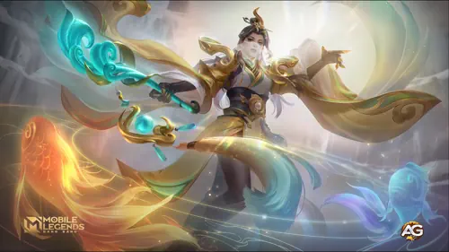
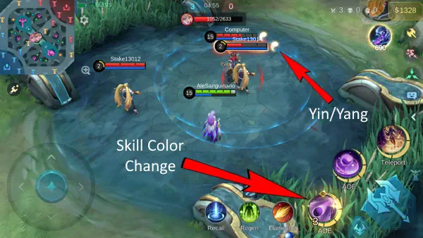

Luo Yi é uma das magas mais fascinantes e desafiadoras em Mobile Legends: Bang Bang. Embora ela pareça equilibrada e relativamente fácil de aprender, dominar verdadeiramente seu potencial exige um profundo entendimento de suas habilidades, combos únicos e estratégias de jogo ideais.
Este guia vai te ensinar tudo o que você precisa saber sobre Luo Yi, incluindo suas habilidades, mecânicas passivas, builds, configuração de emblemas e dicas de gameplay para ajudá-lo a dominar o campo de batalha.

Luo Yi Mobile Legends Bang Bang com skin collector, um jogo desenvolvido pela Moonton.
Desvendando Luo Yi: Visão Geral do Herói e Tier List Geral
A passiva de Luo Yi, Dualidade, é a mecânica central que a torna tão única. Ela aplica selos de Yin e Yang aos seus alvos, causando uma reação quando inimigos marcados por selos opostos se aproximam. Essa reação não apenas puxa os inimigos juntos, mas também causa dano mágico e os imobiliza por um segundo. Dominar o tempo e o posicionamento das habilidades dela é essencial para ativar essa reação de forma eficaz.

Habilidade Passiva de Luo Yi: Dualidade, Mobile Legends.
Primeira Habilidade: Dispersão
A primeira habilidade de Luo Yi permite que ela libere energia em uma direção específica, marcando inimigos com um selo de Yin ou Yang. A marca alterna a cada uso, então é necessário planejar cuidadosamente ao mirar. Acertar inimigos já marcados com um selo oposto ativará a Reação Yin-Yang, causando dano bônus e imobilizando-os.
Mire em pelo menos dois inimigos para maximizar o efeito da reação.
Evite usar o toque automático; mirar manualmente é essencial para acertar alvos em movimento.
Priorize o nível desta habilidade, pois é a principal fonte de dano de Luo Yi.
Segunda Habilidade: Rotação
Luo Yi invoca um campo giratório de energia que causa dano mágico e reduz a velocidade dos inimigos em 60% por um curto período. Assim como sua primeira habilidade, esta também alterna entre os atributos de Yin e Yang. Embora possa ativar a Reação Yin-Yang, ela não marca os inimigos, então precisão e tempo são críticos.
Use esta habilidade para controlar multidões e criar oportunidades para combos.
Posicione estrategicamente em pontos estreitos ou ao redor de objetivos para maximizar seu impacto.
Combine-a com sua primeira habilidade para uma reação garantida.
Habilidade Suprema: Desvio
A habilidade suprema de Luo Yi é uma habilidade que muda o jogo, criando um círculo de teletransporte que permite que ela e seus aliados se teletransportem para um local escolhido no mapa. Essa habilidade tem uma versatilidade incrível, tanto para ataque quanto para defesa.
Realize ataques surpresa teletransportando sua equipe para a retaguarda inimiga.
Gire rapidamente pelo mapa para ajudar aliados ou garantir objetivos.
Escape de situações perigosas teletransportando-se para um local seguro.
Melhores Builds para Luo Yi
Contra Inimigos Frágeis
Livro Mágico
Para regeneração de mana e redução de recarga.
Botas Arcanas
Aumenta a penetração mágica.
Relógio do Destino
Proporciona poder mágico escalável e durabilidade.
Cetro Relâmpago
Amplifica o dano explosivo.
Cristal Mágico
Melhora o poder mágico no final do jogo.
Glaive Divina
Ótima para penetrar a defesa mágica.
Contra Inimigos Resistentes
Varinha Brilhante
Adiciona dano ao longo do tempo a inimigos com alta HP.
Livro Mágico
Essencial para o gerenciamento de tempo de recarga.
Vara da Rainha do Gelo
Reduz a velocidade dos inimigos e melhora o controle de multidões.
Cajado Genial
Reduz a defesa mágica dos inimigos.
Cristal Mágico
Amplia o dano causado.
Asas Sangrentas
Oferece durabilidade adicional e poder mágico.
Emblemas e Talentos Recomendados
O Emblema Mago Personalizado é ideal para Luo Yi. Veja a configuração:
Primeiro Talento: Inspiração – Reduz o tempo de recarga, permitindo lançar habilidades com mais frequência.
Segundo Talento: Bênção da Natureza – Melhora a mobilidade na selva e áreas do rio, facilitando rotações.
Talento Principal: Ignição Letal – Amplia seu dano ao atingir inimigos com habilidades consecutivas.
Combos e Estratégias de Jogo
Combos de Habilidades Ótimos
Primeira Habilidade → Segunda Habilidade: Aplique marcas opostas e ative a Reação Yin-Yang.
Segunda Habilidade → Primeira Habilidade: Use esta sequência se sua segunda habilidade já estiver posicionada para desacelerar inimigos antes de aplicar uma marca.
Suprema → Primeira/Segunda Habilidade: Teleporte-se para uma luta em equipe e use suas habilidades para interromper e imobilizar os inimigos imediatamente.
Dicas para o Início do Jogo
Desbloqueie e priorize o aumento de nível da sua primeira habilidade.
Atrapalhe o mid-laner inimigo com ataques precisos.
Foque em finalizar os minions para obter ouro e experiência rapidamente.
Faça rotações para as laterais para ajudar os aliados quando surgir a oportunidade.
Estratégia no Meio do Jogo
Fique junto ao seu tanque ou lutador durante as rotações para minimizar o risco de emboscadas.
Ajude sua equipe a garantir objetivos como a Tartaruga.
Posicione-se cuidadosamente durante as lutas em equipe, mantendo-se na retaguarda para maior segurança.
Jogabilidade no Final do Jogo
Sempre mova-se com sua equipe – nunca ande sozinho.
Use sua suprema estrategicamente para teletransportar sua equipe para posições vantajosas.
Foque em se manter vivo, pois você é a principal fonte de dano em muitas situações.
Por que Luo Yi se Destaca
O design equilibrado e as mecânicas únicas de Luo Yi a tornam uma maga excepcional em Mobile Legends: Bang Bang. Embora seja desafiadora de dominar, as recompensas valem o esforço. Sua capacidade de atrapalhar os inimigos, causar alto dano explosivo e reposicionar sua equipe a torna valiosa tanto em estratégias solo quanto em equipe.
Perguntas Frequentes
Como ativar a Reação Yin-Yang de forma eficaz? Certifique-se de aplicar selos opostos em pelo menos dois inimigos próximos e posicione suas habilidades cuidadosamente.
Qual é o melhor item inicial para Luo Yi? Livro Mágico é um item essencial no início do jogo para regeneração de mana e redução de recarga.
Como lidar com heróis com habilidades de dash? Foque em antecipar seus movimentos e mire suas habilidades de acordo.
A suprema de Luo Yi pode teletransportar inimigos? Não, apenas Luo Yi e seus aliados podem usar sua suprema para se teletransportar.
Qual é a maior fraqueza de Luo Yi? Luo Yi tem dificuldade contra heróis móveis e exige precisão no uso de suas habilidades.
Como devo me posicionar durante as lutas em equipe? Sempre mantenha-se na retaguarda e deixe seu tanque absorver o dano inicial.
Conclusão
Dominar Luo Yi em Mobile Legends: Bang Bang é desafiador e recompensador. Com um bom entendimento de suas habilidades, combos e estratégias, você pode controlar o campo de batalha e levar sua equipe à vitória. Dedique-se a praticar suas mecânicas, e logo estará realizando jogadas que mudam o jogo com facilidade.
Você gostou do nosso Guia de Luo Yi? Há algo que não entendeu ou gostaria de sugerir mudanças? Convidamos você a se juntar à nossa sessão de comentários na página do Alexandre Games Blog. Não hesite em expressar sua opinião, clarificar suas dúvidas e compartilhar sua sugestões. Clique no botão abaixo para começar:


 Guia da Vexana Mobile Legends
Guia da Vexana Mobile Legends